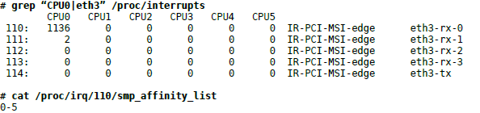
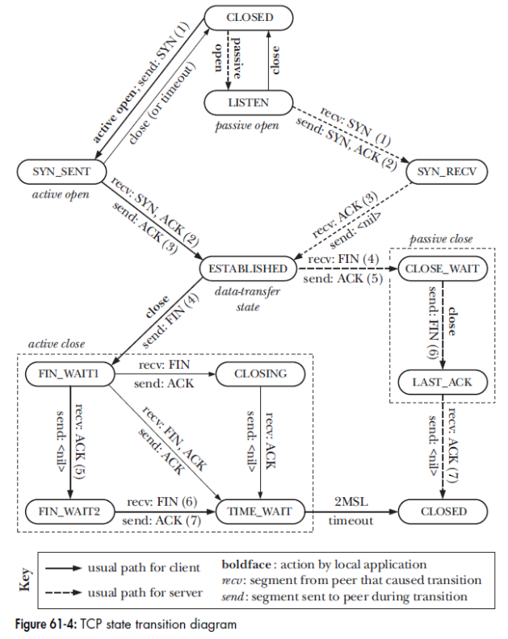
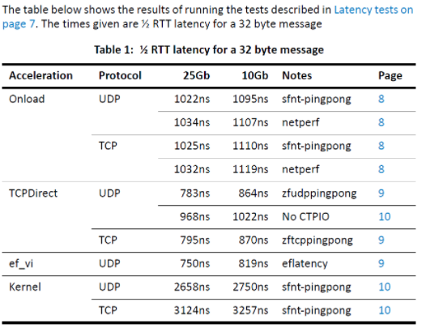

Layer1 - physical layer: wired, wireless
Layer2 - data layer: Ethernet
Layer3 - network layer: IP
Layer4 - Transport layer: TCP, UDP
Layer5 - Session: NetBIOS, SAP, SDP
Layer6 - Presentation: ASCII, JPEG, MIDI
Layer7 - Application: HTTP, DHCP, DNS, SMTP, FTP, Telnet
The default 802.3 Ethernet frame size is 1518 bytes, or 1522 bytes with a VLAN tag. The Ethernet header consumes 18 bytes of this (or 22 bytes with VLAN tag), leaving an effective maximum MTU of 1500 bytes.
Below is an example using a 1500 byte ethernet frame, what is the real payload bandwidth of a TCP packet?
As you can see from the table above, its 1426 B of data payload wraped in 1524B worth of 10G bandwidth. If we do the math on this
10.00e9 bits / (8bits * 1524 bytes) = 820,209 packets
With the resulting effective TCP payload bandwidth
820,209 packets * 1426 bytes * 8 bits = 9.36 Gbps
Its not bad but we've effectively lost close to 1Gbps of bandwidth from the ethernet + IP + TCP encoding. So if your getting high 8.xx Gbps numbers in a TCP bandwidth test, your doing pretty dam well.
IFG (Inter Frame GAP) or IPG
The frames running along the line is not tightly back to back. There should be some space (time gap) with a certain minimum duration. This time gap is called Inter Frame GAP (or Inter packet gap).
The standard minimum interpacket gap for transmission is 96 bit (12 bytes) times (the time it takes to transmit 96 bits of data on the medium).
on 10G Ethenet, it is 96 ns.
Preamble/SOF
The purpose of the preamble is to allow time before transmission starts is to allow a small time interval for the receiver electronics in each of the nodes to settle after completion of the previous frame.
20 bytes
The TCP header’s normal size is 20 bytes, unless options are present, then it can go up to 60 bytes.
The shaded fields (Acknowledgment Number, Window Size, plus ECE and ACK bits) refer to the data flowing in the opposite direction relative to the sender of this segment.
Multiple control bits (or none at all) may be set in a segment, which allows a single segment to serve multiple purposes.
/proc/sys/net/ipv4/tcp_ecn file.pseudo header:
+--------+--------+--------+--------+
| Source Address |
+--------+--------+--------+--------+
| Destination Address |
+--------+--------+--------+--------+
| zero | PTCL | TCP Length |
+--------+--------+--------+--------+
The option-length includes two byte of Option-Kind and Option-Length.
| Option-Kind | Option-Length | Option-Data | Description |
|---|---|---|---|
| 0 | — | — | End Of Option List: A single byte option that marks the end of all options included in this segment. This only needs to be included when the end of the options doesn't coincide with the end of the TCP header. |
| 1 | — | — | No-Operation: A “spacer” that can be included between options to align a subsequent option on a 32-bit boundary if needed. |
| 2 | 4 | SS | Maximum Segment Size: Conveys the size of the largest segment the sender of the segment wishes to receive. Used only in SYN messages. |
| 3 | 3 | S | Window Scale: 16-bit window size field can only represent 65535 bytes. Window scale feature allows to increase the maximum window size from 65,535 bytes to 1 gigabyte. The value represents the number of bits to left-shift for the window size. For example, if the value of Option-Data is 3, this means values in the Window field should be multiplied by 8 (<< 3). The window scale value can be set from 0 (no shift) to 14 for each direction independently. Used only during the TCP 3-way handshake. |
| 4 | 2 | — | Selective Acknowledgment Permitted: Specifies that this device supports the selective acknowledgment (SACK) feature. This was implemented as a two-byte option with no Option-Data field, instead of a single-byte option like End Of Option List or No-Operation. This was necessary because it was defined after the original TCP specification, so an explicit option length had to be indicated for backwards compatibility. |
| 5 | Variable (10, 18, 26, or 34) | BBBB, EEEE, ... | Selective Acknowledgment: Allows devices supporting the optional selective acknowledgment feature to specify non-contiguous blocks of data that have been received. It can a list of 1–4 blocks being selectively acknowledged, specified as 32-bit begin/end pointers |
| 8 | 10 | TTTT,EEEE | Timestamps: TCP timestamps, defined in RFC 1323 in 1992, can help TCP determine in which order packets were sent. There are two timestamp fields: a 4-byte sender timestamp value (my timestamp), a 4-byte echo reply timestamp value (the most recent timestamp received from you). TCP timestamps are enabled by default In Linux kernel. |
| 14 | 3 | Alternate Checksum Algorithm | Alternate Checksum Request: Lets a device request that a checksum generation algorithm other than the standard TCP algorithm be used for this connection. Both devices must agree to the algorithm for it to be used. |
| 15 | Variable | Alternate Checksum | Alternate Checksum: If the checksum value needed to implement an alternate checksum is too large to fit in the standard 16-bit Checksum field, it is placed in this option. |
IP_header.total_length - IP_header.Header_length * 4. But UDP Header has its own length field in case it is transimited/used over another protocol than IP.Locate the bottleneck by investigating the following points:
ethtool -S ethX statistics/proc/net/softnet_stat/proc/interrupts or /proc/softirqsnetstat -s and look for error counters.ethtool
A utility for displaying and changing NIC settings.
-i # 显示网卡驱动的信息，如驱动的名称、版本等
-S # 查看网卡收发包的统计情况 (also shows ring buffer error as `rx_fifo_errors` and `tx_fifo_errors`)
-g/-G # 查看(-g)或者修改(-G)RingBuffer的大小
-l/-L # 查看(-l)或者修改(-L)网卡队列数。每一个队列都有一个中断号，可以独立向某个CPU核心发起硬中断请求，让CPU来poll包。通过将接收进来的包被放到不同的内存队列里，多个CPU就可以同时分别向不同的队列发起消费了。
-c/-C # 查看(-c)或者修改(-C)硬中断合并策略
-k/-K # view(-k) or change(-K) offloading features which move some network processing load onto the network interface card.
Examples:
# check ring buffer errors
ethtool -S eth3 | grep rx_*_errors
rx_over_errors: 399
rx_fifo_errors: 399
rx_missed_errors: 399
# increase both the RX and TX buffers to 8192 bytes
ethtool -G eth3 rx 8192 tx 8192
# check offline features
ethtool -k eth0
Features for eth0:
rx-checksumming: on
tx-checksumming: on
tcp-segmentation-offload: on # tso
generic-receive-offload: on # gro
large-receive-offload: on # lro
rx-vlan-offload: on
tx-vlan-offload: on
...
# turn on gro
ethtool -K eth0 gro on
# Hard Interrupt Coalescence (IC)
# number of microseconds/frames to wait before raising a hardIRQ,
# from the NIC perspective it'll DMA data packets until this timeout/number of frames
ethtool -c ethX
ethtool -C ethX rx-usecs value tx-usecs value
netstat
It prints information about open network connections and protocol stack statistics. It retrieves information about the networking subsystem from the /proc/net/ (including /proc/net/dev, /proc/net/tcp, etc)
/proc/interrupts
Use smp_affinity_list to balance the interrupts

ifconfig
eth0: flags=4163<UP,BROADCAST,RUNNING,MULTICAST> mtu 1500
inet 10.162.42.51 netmask 255.255.248.0 broadcast 10.162.47.255
inet6 fe80::6e0b:84ff:fed5:88d1 prefixlen 64 scopeid 0x20<link>
ether 6c:0b:84:d5:88:d1 txqueuelen 1000 (Ethernet)
RX packets 2953454 bytes 414212810 (395.0 MiB)
RX errors 0 dropped 4636605 overruns 0 frame 0
TX packets 127887 bytes 82943405 (79.1 MiB)
TX errors 0 dropped 0 overruns 0 carrier 0 collisions 0
/proc/net/dev
$ cat /proc/net/dev
Inter-| Receive | Transmit
face |bytes packets errs drop fifo frame compressed multicast|bytes packets errs drop fifo colls carrier compressed
eth0: 110346752214 597737500 0 2 0 0 0 20963860 990024805984 6066582604 0 0 0 0 0 0
lo: 428349463836 1579868535 0 0 0 0 0 0 428349463836 1579868535 0 0 0 0 0 0
sysfs
sysfs和/proc类似，也是一个伪文件系统，但是比/proc更新，结构更清晰。其中的/sys/class/net/eth0/statistics/也包含了网卡的统计信息。
# cd /sys/class/net/eth0/statistics/
# grep . * | grep tx
tx_aborted_errors:0
tx_bytes:170699510
tx_carrier_errors:0
tx_compressed:0
tx_dropped:0
tx_errors:0
tx_fifo_errors:0
tx_heartbeat_errors:0
tx_packets:262330
tx_window_errors:0
/proc/net/softnet_stat SoftNetStats
This parser parses the stats from network devices.
# cat softnet_stat
0073d76b 00000000 000049ae 00000000 00000000 00000000 00000000 00000000 00000000 00000000
000000d2 00000000 00000000 00000000 00000000 00000000 00000000 00000000 00000000 00000000
0000015c 00000000 00000000 00000000 00000000 00000000 00000000 00000000 00000000 00000000
0000002a 00000000 00000000 00000000 00000000 00000000 00000000 00000000 00000000 00000000
Each line is per CPU
netdev_max_backlog being exceeded.
netdev_max_backlog is a input_pkt_queue within the Linux kernel where traffic is stored after reception from the NIC, but before processing by the protocol stacks (IP, TCP, etc). netif_receive_skb() kernel function will find the corresponding CPU for a packet, and enqueue packets in that CPU's queue.netif_receive_skb() call and RPS is not enabled, increasing the netdev_max_backlog will not yield any performance improvement because no data will ever make it to the input_pkt_queue.net.core.netdev_max_backlog to alleviate this. A recommended approach is to increase the backlog value by the change in column 2 over a 10 second period + some buffer.net.core.netdev_budget to alleviate this.system-wide tunable parameters can be viewed and set using the sysctl(8) command
and written to /etc/sysctl.conf. They can also be read and written from the /proc file system,
under /proc/sys/net.
Device backlog: Increasing the length of the network device backlog queue, per CPU:
net.core.netdev_max_backlog = 10000
Queueing Disciplines
This is an optional layer for managing traffic classification (tc), scheduling, manipulation, filtering,
and shaping of network packets. Linux provides numerous queueing discipline algorithms
(qdiscs), which can be configured using the tc(8) command. As each has a man page, the man(1)
command can be used to list them:
$ man -k tc-
# The default qdisc can be viewed and set using:
$ sysctl net.core.default_qdisc
net.core.default_qdisc = fq_codel
# lists the current qdisc configuration for the interface eth0:
$ tc qdisc show dev eth0
# Add netem qdisc. Also, use the packet loss parameters for netem, and set packet loss to 1%.
$ tc qdisc add dev eth0 root netem loss 1%
# The -s option to tc(8) shows statistics:
$ tc -s qdisc show dev eth0
The Linux kernel sets pfifo_fast as the default qdisc. But many Linux distributions have already switched to fq_codel as the default because it provides good performance in most cases.
RFC 793: "Transmission Control Protocol" (September 1981)
RFC 1122: "Requirements for Internet Hosts - Communication Layers" (October 1989)
RFC 5681: "TCP Congestion Control" (August 2009)
RFC 6298: "Computing TCP's Retransmission Timer" (June 2011)

ISN
The initial sequence number (ISN) for a stream doesn’t start at 0. Instead, it is generated via an algorithm that increases the ISN assigned to successive TCP connections
RFC1948 提到初始化序列号 ISN 随机生成算法：ISN = M + F(localhost, localport, remotehost, remoteport)。
The SYN flag consumes a byte of the sequence-number space for the connection. This is necessary so that this flag can be acknowledged unambiguously, this is why we show the acknowledgement of the SYN x segment as ACK x+1
第三次握手是可以携带数据的，前两次握手是不可以携带数据的。
Why three-way handshake?
Missing SYN packet
如果客户端迟迟收不到服务端的 SYN-ACK 报文（第二次握手），就会触发「超时重传」机制，重传 SYN 报文。
net.ipv4.tcp_syn_retries内核参数控制，默认值一般是 5。如果第二次握手丢失了，服务端就收不到第三次握手。或者客户端接到SYN-ACK后发的第三次握手ACK丢失了。服务端这边会触发超时重传机制，重传 SYN-ACK 报文。
net.ipv4.tcp_synack_retries内核参数决定，默认值是 5。在 TCP 三次握手的时候，Linux 内核会维护两个队列，分别是：
服务端收到客户端发起的 SYN 请求后，内核会把该连接存储到半连接队列，并向客户端响应 SYN+ACK，接着客户端会返回 ACK，服务端收到第三次握手的 ACK 后，内核会把连接从半连接队列移除，然后创建新的完全的连接，并将其添加到 accept 队列，等待进程调用 accept 函数时把连接取出来。
Accept Queue
TCP 全连接队列足最大值取决于 somaxconn 和 backlog 之间的最小值，也就是 min(somaxconn, backlog)
somaxconn 是 Linux 内核的参数，默认值是 128，可以通过 /proc/sys/net/core/somaxconn 来设置其值；backlog 是 listen(int sockfd, int backlog) 函数中的 backlog 大小在服务端可以使用 ss 命令，来查看 TCP 全连接队列的情况。在「LISTEN 状态」时，Recv-Q/Send-Q 表示的含义如下：
accept() 的 TCP 连接个数；当超过了 TCP 最大全连接队列，服务端则会丢掉后续进来的 TCP 连接，丢掉的 TCP 连接的个数会被统计起来，我们可以使用 netstat -s 命令来查看：
net.ipv4.tcp_abort_on_overflow 可改变全连接队列满后Linux的行为
SYN Queue
After kernel 4.3, the backlog parameter passed to the listen(2) sets the SYN Queue size too.
The SYN Queue cap used to be configured by the net.ipv4.tcp_max_syn_backlog setting, but this isn't the case anymore. Nowadays net.core.somaxconn caps both queue sizes.
The SYN will be dropped if SYN queue is full or (tcp_max_syn_backlog - current syn_queue size < tcp_max_syn_backlog >> 2)
In summary, to increase the SYN queue, we have to change all three settings to proper values: net.ipv4.tcp_max_syn_backlog, net.core.somaxconn, and backlog parameter.
There is no good way to check the SYN queue overflow. In turn, we can check how many sockets in "SYN_RECV" state with # netstat -antp | grep SYN_RECV
SYN Flood attack
攻击者短时间伪造不同 IP 地址（spoofed addresses）的 SYN 报文，服务端每接收到一个 SYN 报文，就进入SYN_RCVD 状态，但服务端发送出去的 SYN_ACK 报文，不会得到未知IP的ACK，久而久之就会占满服务端的半连接队列，使得服务器不能为正常用户服务。
一种解决方式是通过修改 Linux 内核参数，控制队列大小和当队列满时应做什么处理。
net.core.netdev_max_backlognet.ipv4.tcp_max_syn_backlognet.ipv4.tcp_abort_on_overflowtcp_syncookies 的方式可以应对 SYN 攻击：net.ipv4.tcp_syncookies = 1
Defined in RFC 7413
TCP Fast Open (TFO) is an optional mechanism that allows optional data to be carried in the SYN and SYN-ACK packets. It lets endpoints that have established a full TCP connection in the past eliminate a round-trip of the handshake and send data right away.
In Linux, the option can be enabled in net.ipv4.tcp_fastopn, "1" means TFO is only enabled on outgoing connections (client), and "2" indicates it is only available on listening sockets (server). "3" means enable both.
Fastopen reality: https://squeeze.isobar.com/2019/04/11/the-sad-story-of-tcp-fast-open/
| Linux Parameter | Usage |
|---|---|
net.ipv4.tcp_syn_retries |
当客户端发起 SYN 包时，可以通过 tcp_syn_retries 控制其重传的次数。 |
net.ipv4.tcp_synack_retries |
服务端回复 SYN+ACK 的重传次数由 tcp_synack_retries 参数控制。 |
netstat -s |
查看半连接队列溢出的情况 |
net.ipv4.tcp_max_syn_backlog net.core.somaxconn backlog parameter |
如果 SYN 半连接队列溢出情况比较严重，可以通过 tcp_max_syn_backlog、somaxconn、backlog 参数来调整 SYN 半连接队列的大小 |
ss -lnt |
查看服务端进程的 accept 队列长度 |
net.core.somaxconn backlog parameter |
如果 accpet 队列溢出严重，可以通过 listen 函数的 backlog 参数和 somaxconn 系统参数提高队列大小，accept 队列长度取决于 min(backlog, somaxconn) |
net.ipv4.tcp_abort_on_overflow |
accept 队列溢出，系统默认丢弃 ACK，如果可以把 tcp_abort_on_overflow 设置为 1 ，表示用 RST 通知客户端连接建立失败 |
net.ipv4.tcp_syncookies |
如果遭受 SYN 攻击，应把 tcp_syncookies 参数设置为 1，表示仅在 SYN 队列满后开启 syncookie 功能，可以保证正常的连接成功建立。 |
net.ipv4.tcp_fastopn |
TCP Fast Open 功能可以绕过三次握手，使得 HTTP 请求减少了 1 个 RTT 的时间 |
tcp_slow_start_after_idle |
This causes communication to start or resume gradually. This is helpful if you are on a variable speed WAN like 3G or 4G (LTE) mobile network. But on a LAN or across a fixed-bandwidth WAN you want the connection to start out going as fast as it can. |
Full-duplex close: an application closes both the sending and receiving channels of the TCP socket using close(). 调用了 close 函数的一方的连接叫做「孤儿连接」，如果你用 netstat -p 命令，会发现连接对应的进程名为空。
read() from the socket yields end-of-file (i.e., a 0 return).Same as with the SYN flag, and for the same reasons, the FIN flag consumes a byte of the sequence-number space for the connection. This is why we show the acknowledgement of the FIN u segment as ACK u+1
Half close: We can use shutdown() to close just one channel of the connection. 我完成了发送数据，所以发送文件结束（FIN）到另一端，但我仍然希望收到来自另一端的数据，直到它发送给我一个文件结束（FIN）
showdown()’s argument how as SHUT_WR initiates the TCP connection termination sequenceSHUT_RD should be avoided for portable TCP applications.当客户端收到第二次挥手，也就是收到服务端发送的 ACK 报文后，客户端就会处于 FIN_WAIT2 状态，在这个状态需要等服务端发送第三次挥手，也就是服务端的 FIN 报文。Many systems have introduced a timeout mechanism that restricts how long a TCP connection can remain in the half-closed state. Linux operating system implements a half-close timeout.
net.ipv4.tcp_fin_timeout， default 60 seconds.net.ipv4.tcp_fin_timeout says: This specifies how many seconds to wait for a final FIN packet before the socket is forcibly closed. This is strictly a violation of the TCP specification, but required to prevent denial-of-service attacks.Missing FIN
如果第一次挥手丢失了，那么客户端迟迟收不到被动方的 ACK ；或者如果服务端的第二次挥手(The ACK of client's FIN)丢失了, 这两种情况都会触发超时重传机制，重传 FIN 报文，重发次数由 tcp_orphan_retries 参数控制。当客户端重传 FIN 报文的次数超过 tcp_orphan_retries 后，就不再发送 FIN 报文，直接进入到 close 状态。
如果服务端的第三次挥手（FIN sent by the server）丢失，迟迟收不到这个 ACK，或者第四次挥手（last ACK sent by client）丢失，服务端就会重发 FIN 报文，重发次数仍然由 tcp_orphan_retries 参数控制。
TIME_WAIT
Good read about TIME_WAIT: https://vincent.bernat.ch/en/blog/2014-tcp-time-wait-state-linux.
include/net/tcp.h #define TCP_TIMEWAIT_LEN (60*HZ) /* how long to wait to destroy TIME-WAIT
state, about 60 seconds */
net.ipv4.tcp_tw_reuse
net.ipv4.tcp_timestamps=1（默认即为 1）.SO_LINGERstruct linger sl;
sl.l_onoff = 1; /* non-zero value enables linger option in kernel */
sl.l_linger = 0; /* timeout interval in seconds */
setsockopt(sockfd, SOL_SOCKET, SO_LINGER, &sl, sizeof(sl));
RST packet , skipping 4-way handshake teardown and thus skipping TIME_WAIT. This is not recommended.close(2) or shutdown(2) will not return until all queued messages for the socket have been successfully sent or the linger timeout has been reached. When it was done, it sends a FIN to initate a close. (This has nothing to do with disable TIME_WAIT)net.ipv4.tcp_max_tw_buckets (default 18000)
CLOSE_WAIT
Socket enters the CLOSE_WAIT state when the remote end terminates the connection sending a packet with the FIN flag set. It then waits in this state for the local application to close() the socket and then sends its own FIN to the client and transitions the socket to the LAST_ACK state.
If the remote address and port stay constant and the number of connections in the CLOSE_WAIT state keeps growing, it most likely indicates a problem with the application.
| Linux Parameter | Usage |
|---|---|
net.ipv4.tcp_orphan_retries |
1. 主动发起 FIN 的一方，如果迟迟没收到对方的 ACK ，则会重传 FIN 报文，重传的次数由 tcp_orphan_retries 参数决定 2. 当被动方发送 FIN 报文后，连接就进入 LAST_ACK 状态，在未等到 ACK 时，会在 tcp_orphan_retries 参数的控制下重发 FIN 报文 |
net.ipv4.tcp_fin_timeout |
当主动方收到 ACK 报文后，连接就进入 FIN_WAIT2。如果 tcp_fin_timeout 秒(默认值是 60 秒)内没有收到对方的 FIN 报文，连接就直接关闭。 tcp_fin_timeout只控制对于 close 函数关闭的孤儿连接，如果连接是用 shutdown 函数关闭的，连接可以一直处于 FIN_WAIT2 状态（因为它可能还可以发送或接收数据） |
net.ipv4.tcp_max_orphans |
为了应对孤儿连接占用太多的资源，tcp_max_orphans 定义了最大孤儿连接的数量。如果孤儿连接数量大于它，新增的孤儿连接将不再走四次挥手，而是直接发送 RST 复位报文强制关闭。 |
net.ipv4.tcp_max_tw_buckets |
主动方连接进入 TIME_WAIT 状态后，这一状态会持续 1 分钟，为了防止 TIME_WAIT 状态占用太多的资源，tcp_max_tw_buckets 定义了最大数量，超过时连接也会直接释放。 |
net.ipv4.tcp_tw_reuse |
当 TIME_WAIT 状态过多时，还可以通过设置 tcp_tw_reuse 和 tcp_timestamps 为 1 ，将 TIME_WAIT 状态的端口复用于作为客户端的新连接，注意该参数只适用于客户端。 |
net.ipv4.tcp_rfc1337 |
这个参数是在 rfc 1337 文档提出来的，目的是避免因为 TIME_WAIT 状态收到 RST 报文而跳过 2MSL 的时间，文档里也给出跳过 2MSL 时间会有什么潜在问题。如果 net.ipv4.tcp_rfc1337 参数为 0，则提前结束 TIME_WAIT 状态，释放连接。如果为 1，则会丢掉该 RST 报文。 |
TCP 有一个机制是保活机制。这个机制的原理是这样的：
定义一个时间段，在这个时间段内，如果没有任何连接相关的活动，TCP 保活机制会开始作用，每隔一个时间间隔，发送一个探测报文，该探测报文包含的数据非常少，如果连续几个探测报文都没有得到响应，则认为当前的 TCP 连接已经死亡，系统内核将错误信息通知给上层应用程序。
应用程序若想使用 TCP 保活机制需要通过 socket 接口设置 SO_KEEPALIVE 选项才能够生效。
net.ipv4.tcp_keepalive_time=7200 # 7200 秒 (2 小时) 内如果没有任何连接相关的活动，则会启动保活机制
net.ipv4.tcp_keepalive_intvl=75 # 表示每次检测间隔 75 秒；
net.ipv4.tcp_keepalive_probes=9 # 表示检测 9 次无响应，认为对方是不可达的，从而中断本次的连接。
HTTP Keep-Alive
Note TCP Keep-alive is totally different than HTTP Keep-Alive. HTTP Keep-alive is a HTTP application layer feature. 可以使用同一个 TCP 连接来发送和接收多个 HTTP 请求/应答，避免了连接建立和释放的开销，这个方法称为 HTTP 长连接。HTTP 长连接不仅仅减少了 TCP 连接资源的开销，而且这给 HTTP 流水线技术提供了可实现的基础(客户端可以先一次性发送多个请求，而在发送过程中不需先等待服务器的回应，可以减少整体的响应时间)。
To enable, In the HTTP header, add Connection: Keep-Alive. It is default on since HTTP 1.1.
web 服务软件一般都会提供 keepalive_timeout 参数，用来指定 HTTP 长连接的超时时间。比如设置了 HTTP 长连接的超时时间是 60 秒，如果客户端在完后一个 HTTP 请求后，在 60 秒内都没有再发起新的请求，定时器的时间一到，就会触发回调函数来释放该连接。
Nagles algorithm
On the sending side. When a TCP connection has outstanding data that has not yet been acknowledged, small segments (those smaller than the SMSS) cannot be sent until all outstanding data is acknowledged.
if there is new data to send then
if the window size ≥ MSS and available data is ≥ MSS then
send complete MSS segment now
else
if there is unconfirmed data still in the pipe then
enqueue data in the buffer until an acknowledge is received
else
send data immediately
end if
end if
end if
Disable Nagles by process using TCP_NODELAY flag:
int one = 1;
int result = setsockopt(sockfd, IPPROTO_TCP, TCP_NODELAY, &one, sizeof(one));
if (result < 0)
... handle the error ...
TCP_CORK
TCP_CORK aggressively accumulates data. If set, don't send out partial frames. All queued partial frames are sent when one of the below conditions is met:
Until 2.6 kernel, both of these options are mutually exclusive. But in later kernel, both of them can exist together. In such case, TCP_CORK will be given more preference.
Delayed Ack
On the receiving side. With delayed ACK, ACKs are not sent immediately but delayed for some time (usually 200 ms, in Linux, 40ms) in the hope that the ACK it needs to send can be combined or "piggybacked" with some data the local application wishes to send in the other direction.
Acks will only be sent in one of below conditions:
Delayed Ack and Nagles doesn't play well together.
Because Delayed ACKs are waiting around to send the ACK while Nagle's is waiting around to receive the ACK!
Example:
Disable Delayed Ack:
setsockopt(sockfd, IPPROTO_TCP, TCP_QUICKACK, (int[]){1}, sizeof(int)) after every write().If you explicitly bind a socket, it is possible to bind it to port 0, which means "any port". The system will have to choose a specific port itself in that case (usually from a predefined, OS specific range of source ports).
You can bind a socket to the wildcard "any address" too, it is INADDR_ANY (0.0.0.0) in case of IPv4. It means "all source IP addresses of all local interfaces". If the socket is connected later on, depending on the destination address and the content of the routing table, the system will pick an appropriate source address and replace the "any" binding with a binding to the chosen source IP address.
By default, no two sockets can be bound to the same combination of source address and source port.
SO_REUSEADDR in Linux: If source address is different, we can bind two socket to the same port. eg. Bind socketA to ipA:portA and socketB to ipB:portA will work.
0.0.0.0:21, it is bound to all existing local addresses at the same time and no other socket can be bound to port 21, regardless which specific IP address it tries to bind to.Two usage of SO_REUSEADDR:
SO_REUSEADDR changes the way a socket in state TIME_WAIT are treated when searching for conflicts.
SO_REUSEADDR, Socket in TIME_WAIT is considered to still be bound to the source address and port and any attempt to bind a new socket to the same address and port will fail.SO_REUSEADDR is set for the socket you are trying to bind, another socket bound to the same address and port in state TIME_WAIT is simply ignored, regardless of the SO_REUSEADDR setting for that socket.
SO_REUSEADDR changes the way how wildcard address ("any IP address") is treated when searching for conflicts.
SO_REUSEADDR, binding socketA to 0.0.0.0:21 and then binding socketB to 192.168.0.1:21 will fail (with error EADDRINUSE)SO_REUSEADDR above case will succeed, since 0.0.0.0 and 192.168.0.1 are not exactly the same address when SO_REUSEADDR is in effect.connect() will fail with the error EADDRINUSE for the second socket you try to connect, as kernel identifies socket by a tuple of five values: {<protocol>, <src addr>, <src port>, <dest addr>, <dest port>}SO_REUSEADDR for multicast
The meaning of SO_REUSEADDR changes for multicast addresses as it allows multiple sockets to be bound to exactly the same combination of source multicast address and port. Actually, the code treats SO_REUSEADDR and SO_REUSEPORT identically for multicast addresses, that means you could say that SO_REUSEADDR implies SO_REUSEPORT for all multicast addresses and the other way round.
SO_REUSEPORT
(Linux v3.9 added the option SO_REUSEPORT)
SO_REUSEPORT allows you to bind an arbitrary number of sockets to exactly the same source address and port as long as all prior bound sockets also had SO_REUSEPORT set before they were bound.
SO_REUSEPORT, no other socket can bind to it. (this is different than SO_REUSEADDR behavior where it only checks the new socket).SO_REUSEPORT can be used with both TCP and UDP sockets.
accept()) evenly across all sockets. Thus an application can easily open the same port in multiple child processes and then use SO_REUSEPORT to get a very inexpensive load balancing.setsockopt(fd, SOL_SOCKET, SO_REUSEPORT, ...);
//file: net/core/sock.c
int sock_setsockopt(struct socket *sock, int level, int optname,
char __user *optval, unsigned int optlen)
{
...
switch (optname) {
...
case SO_REUSEPORT:
sk->sk_reuseport = valbool;
...
}
}
At the time of bind():
// When kernel does inet_bind, it calls inet_csk_get_port
//file: net/ipv4/inet_connection_sock.c
int inet_csk_get_port(struct sock *sk, unsigned short snum)
{
...
//内核通过拉链哈希表的方式来管理所有的 bind 的 socket。这个hash叫绑定表（bhash）
// 其中 inet_bhashfn 是计算哈希值的函数。
head = &hashinfo->bhash[inet_bhashfn(net, snum,
hashinfo->bhash_size)];
// 遍历所有的 bind 状态的 socket，目的是为了判断是否冲突。
inet_bind_bucket_for_each(tb, &head->chain)
//找到了，在一个命名空间下而且端口号一致，表示该端口已经绑定
if (net_eq(ib_net(tb), net) && tb->port == snum)
goto tb_found;
...
tb_found:
if ((
(tb->fastreuse > 0 && sk->sk_reuse && sk->sk_state != TCP_LISTEN)
||
(tb->fastreuseport > 0 && sk->sk_reuseport && uid_eq(tb->fastuid, uid) /*same uid*/)
) && smallest_size == -1) {
goto success;
} else {
//绑定冲突
......
}
At the time of accept():
//file: net/ipv4/inet_hashtables.c
struct sock *__inet_lookup_listener(struct net *net,
struct inet_hashinfo *hashinfo,
const __be32 saddr, __be16 sport,
const __be32 daddr, const unsigned short hnum,
const int dif)
{
//内核仍然是通过 hash + 拉链的方式来保存所有的 listen 状态的 socket。
// 所有 listen socket 都在这个 listening_hash 中
struct inet_listen_hashbucket *ilb = &hashinfo->listening_hash[hash];
begin:
result = NULL;
hiscore = 0;
// 遍历所有 hash 值相同的 listen 状态的 socket
sk_nulls_for_each_rcu(sk, node, &ilb->head) {
// 计算匹配分。当有多个 socket 都命中的时候，匹配分高的优先命中。
score = compute_score(sk, net, hnum, daddr, dif);
if (score > hiscore) {
result = sk;
hiscore = score;
reuseport = sk->sk_reuseport;
if (reuseport) {
phash = inet_ehashfn(net, daddr, hnum,
saddr, sport);
matches = 1;
}
} else if (score == hiscore && reuseport) {
// 如果当多个 socket 的匹配分一致，通过调用 next_pseudo_random32 进行随机的选择。
matches++;
if (((u64)phash * matches) >> 32 == 0)
result = sk;
phash = next_pseudo_random32(phash);
}
}
...
return result;
}
//file: net/ipv4/inet_hashtables.c
// The way to match/score is to match the locally binded IP with the IP that client (connector) connnects to.
// If local IP == connect IP, score is 4
// If local IP != connect IP, score is -1
// If local IP is 0.0.0.0 (INADDR_ANY), score is 2
static inline int compute_score(struct sock *sk, ...)
{
int score = -1;
struct inet_sock *inet = inet_sk(sk);
if (net_eq(sock_net(sk), net) && inet->inet_num == hnum &&
!ipv6_only_sock(sk)) {
//如果服务绑定的是 0.0.0.0，那么 rcv_saddr 为假
__be32 rcv_saddr = inet->inet_rcv_saddr;
score = sk->sk_family == PF_INET ? 2 : 1;
if (rcv_saddr) {
if (rcv_saddr != daddr)
return -1;
score += 4;
}
...
}
return score;
}
TCP flow-control controls the traffic from a particular sender to a receiver. It makes sure that the receiver will not be overwhelmed with data. Receiver advertised window is the key to flow control.
When data is acknowledged, this causes bytes to move from Transmit Category #2 to Category #1, by increasing the value of SND.UNA. Assuming that the send window size doesn't change, this causes the window to slide to the right, permitting more data to be sent.
Factor to determine Send window (minimum of below factors)
SO_SNDBUF)The congestion window (cwnd) is the sender’s flow control that is based on the network capacity and conditions. It is usually referred to in multiples of maximum segment size (MSS). So an MSS of 1460 and a cwnd of 33 would be ~48k bytes.
Flow control prevents a fast sender from overwhelming a slow receiver. To implement flow control, the receiving TCP maintains a buffer for incoming data.
Receive Next (RCV.NXT): The sequence number of the next byte of data that is expected from the other device.
Receive Window (RCV.WND): The size of the receive window “advertised” to the other device. This refers to the number of bytes the device is willing to accept at one time from its peer, which is usually the size of the buffer allocated for receiving data for this connection.
Receiver window opens only by a small amount, hence sender can send only a small amount of data at a time
Solution:
min(MSS, ½*rwnd).窗口探测的次数一般为 3 次，每次大约 30-60 秒（不同的实现可能会不一样）。如果 3 次过后接收窗口还是 0 的话，有的 TCP 实现就会发 RST 报文来中断连接。
Parameters core/rmem_default and core/wmem_default are the system default receive and send tcp buffer sizes, while core/rmem_max and core/wmem_max are the maximum receive and send buffer sizes that can be set using setsockopt(), in bytes
/proc/sys/net/core/rmem_default
/proc/sys/net/core/rmem_max
/proc/sys/net/core/wmem_default
/proc/sys/net/core/wmem_max
Parameters ipv4/tcp_rmem and ipv4/tcp_wmem are the amount of memory in bytes for read (receive) and write (transmit) buffers per open socket. Each contains three numbers: the minimum, default, and maximum values.
/proc/sys/net/ipv4/tcp_rmem (for read)
/proc/sys/net/ipv4/tcp_wmem (for write)
From this post,
net.ipv4.tcp_rmemwill overridenet.core.rmem_maxin TCP code except when settingSO_RCVBUFwheresysctl_rmem_maxis used to limit the argument.
Parameter tcp_mem is the amount of memory in 4096-byte pages totaled across all TCP applications. It contains three numbers: the minimum, pressure, and maximum. The pressure is the threshold at which TCP will start to reclaim buffer memory to move memory use down toward the minimum. You want to avoid hitting that threshold.
/proc/sys/net/ipv4/tcp_mem (in terms of pages, for sum of all TCP apps)
Tuning Strategy:
tcp_rmem and tcp_wmem. IBM's High Performance Computing page recommends 4096 87380 16777216.tcp_mem, set it to twice the maximum value for tcp_[rw]mem multiplied by the maximum number of running network applications divided by 4096 bytes per page.rmem_max and wmem_max so they are at least as large as the third values of tcp_rmem and tcp_wmem.View current buffer size
the default socket buffers are set when the sock is initialised (in tcp_init_sock()) but the kernel then dynamically sizes them (unless set using setsockopt() with SO_SNDBUF). The actual size of the buffers for currently open sockets may be inspected using the ss command.
Sample output:
State Recv-Q Send-Q Local Address:Port Peer Address:Port
ESTAB 0 0 192.168.56.102:ssh 192.168.56.1:56328
skmem:(r0,rb369280,t0,tb87040,f0,w0,o0,bl0,d0)
Here's a brief explanation of skmem (socket memory) - for more info you'll need to look at the kernel sources (i.e. sock.h):
r:sk_rmem_alloc
rb:sk_rcvbuf # current receive buffer size
t:sk_wmem_alloc
tb:sk_sndbuf # current transmit buffer size
f:sk_forward_alloc
w:sk_wmem_queued # persistent transmit queue size
o:sk_omem_alloc
bl:sk_backlog
d:sk_drops
TCP congestion-control algorithms are designed to prevent a fast sender from overwhelming a network. It prevents the network from getting congested.
RFC 5681: "TCP Congestion Control" (August 2009)
This document specifies four TCP congestion control algorithms
Two main parameters:
Init:
During slow start:
a TCP increments cwnd by at most SMSS bytes for each ACK received that cumulatively acknowledges new data. (this is actually exponential growth, 1,2,4 over each RTT)
Ends: when cwnd exceeds ssthresh
The initial cwnd value (initcwnd) is up for turning, some posts (here and here) suggest increase it to 10.
During congestion avoidance, cwnd is incremented by roughly 1 full-sized segment per round-trip time (RTT).
Congestion avoidance continues until congestion is detected.
This method both allows TCPs to increase cwnd by one segment per RTT in the face of delayed ACKs
The fast retransmit algorithm uses the arrival of 3 duplicate ACKs as an indication that a segment has been lost. After receiving 3 duplicate ACKs, TCP performs a retransmission without waiting for the retransmission timer to expire.
After fast-retransmission, the "fast recovery" algorithm governs the transmission of new data until a non-duplicate ACK arrives.
The reason for not performing slow-start is that the receipt of the duplicate ACKs not only indicates that a segment has been lost, but also indicates further segments which the receiver cannot acknowledge are still arriving and being buffered. Therefore, there is still flow on the pipe that we can try to preserve.
After receiving three duplicated ACKs in a row:
Type 1 : Retransmission due to Timeout – In this case congestion possibility is high.
Type 2 : Retransmission due to 3 Acknowledgement Duplicates – In this case congestion possibility is less.
RTO （Retransmission Timeout 超时重传时间）
超时重传时间 RTO 的值应该略大于报文往返 RTT （Round-Trip Time 往返时延）的值。
RFC 6289 codifies the algorithm for setting the RTO. a TCP MUST NOT be more aggressive than the following algorithms allow.
a TCP sender maintains two state variables
Initial value:
RTO = 1After the first RTT measurement of R
SRTT = RRTTVAR = R/2RTO = SRTT + 4*RTTVARAfter a subsequent RTT measurement of R2
RTTVAR = (1-β) * RTTVAR + β * |SRTT - R2|, where β = 0.25SRTT = (1 - α) * SRTT + α * R2, where α = 0.125RTO = SRTT + 4*RTTVARWhen RTO timer expires:
RTO = RTO * 2 ("back off the timer").In Liunx, during the TCP established state, TCP retransmits an unacknowledged packet up to net.ipv4.tcp_retries2 sysctl setting times (defaults to 15) using an exponential backoff timeout for which each retransmission timeout is between TCP_RTO_MIN (200 ms) and TCP_RTO_MAX (120 seconds).
The value of TCP_RTO_MIN and TCP_RTO_MAX is hardcoded in the Linux kernel and defined by the following constants:
#define TCP_RTO_MAX ((unsigned)(120*HZ))
#define TCP_RTO_MIN ((unsigned)(HZ/5))
Linux 2.6+ uses HZ of 1000ms, so TCP_RTO_MIN is 200 ms and TCP_RTO_MAX is 120 seconds. Given a default value of tcp_retries set to 15, it means that it takes 924.6 seconds to detect a broken connection.
In Linux, you can show the current RTO values for your open connections by running the ss -i command
Selective acknowledgment (SACK) is to help alleviate congestion that can arise due to the retransmission of dropped packets, in 1996 from RFC 2018. It allows the endpoints to describe which pieces of the data they have received, in a number of contiguous SACK blocks, so that only the missing pieces need to be retransmitted.
SACK needs to be enabled by both ends, using net.ipv4.tcp_sack, default is on after linux v2.4.
SACK panic attack
Detail refer to: https://lwn.net/Articles/791409/
The vulnerabilities specifically relate to the Maximum Segment Size (MSS) and TCP Selective Acknowledgement (SACK) capabilities. The most serious, dubbed “SACK Panic,” allows a remotely-triggered kernel panic on recent Linux kernels.
The struct tcp_skb_cb is a control buffer that tracks various things about a TCP packet, including the number of segments/fragments it has been broken up into. The number of segments is stored in the tcp_gso_segs field, which is a two-byte unsigned integer.
An attacker can use a small MSS value (perhaps the minimum of 48 bytes, which only leaves eight bytes for actual user data) and cause an overflow of tcp_gso_segs by carefully choosing which segments to acknowledge.
The duplicate-SACK option, in 2000 from RFC 2883. The TCP receiver sends a D-ACK to indicate that no segments were lost, and the TCP sender can then reinstate the higher transmission-rate.
An example: two acks were lost. Sender retransmitted the packet（3000 ~ 3499）after RTO. The Recevier found the data is duplicated, reply with a SACK (3000-3500) with ACK_NUM=4000. This is a D-SACK, it indicates all data before 4000 is received.
Remember, timer in linux will cause soft irq, so it will take CPU resources.
There are several TCP congestion control algorithms, they are loaded as modules and /proc/sys/net/ipv4/tcp_available_congestion_control will list the currently loaded modules.
Cubic is a network congestion avoidance algorithm for TCP, used by default in Linux kernels 2.6.19 and above starting in 2006.
CUBIC increases its window to be real-time dependent, not RTT dependent like BIC. The calculation for cwnd (congestion window) is simpler than BIC, too.
basic idea: after a congestion, large increments at first (cubic increase), which decrease around the window size that caused the last congestion (around middle, recorded when congestion last happened), and then continue to increase with large increments.
developed in google in 2016. While most CCAs are loss-based, in that they rely on packet loss to detect congestion and lower rates of transmission, BBR uses the maximum bandwidth and round-trip time at which the network delivered the most recent flight of outbound data packets to build a model of the network.
BBR has been available for Linux TCP since Linux 4.9
BBR can provide dramatically better performance on some network paths, while hurting performance on others. BBRv2 is currently in development and promises to fix some of the deficiencies of v1.
DataCenter TCP relies on switches configured to emit Explicit Congestion Notification (ECN) marks at a very shallow queue occupancy to rapidly ramp up to the available bandwidth (RFC 8257). This makes DCTCP unsuitable for deployment across the Internet, but in a controlled environment it can improve performance significantly.
ip link
bash
#ip link
1: lo: <LOOPBACK,UP,LOWER_UP> mtu 16436 qdisc noqueue state UNKNOWN
link/loopback 00:00:00:00:00:00 brd 00:00:00:00:00:00
2: eth0: <BROADCAST,MULTICAST,UP,LOWER_UP> mtu 9000 qdisc pfifo_fast state UP qlen 1000
link/ether 52:54:00:36:b2:d1 brd ff:ff:ff:ff:ff:ff
ip link set dev em1 txqueuelen 2000In general terms, you speak with a NIC using ring buffers in host RAM - the RX, TX, and event/completion queues.
Solarflare OpenOnload’s ef_vi
Solarflare provides three ways to use their stack: Onload, TCPDirect, ef_vi

Mellanox OFED ibverbs
"Classful" Addressing Class: At the beginning of TCP/IP, The IP address space was split into classes in a way that looking at only the first few bits of any IP address would tell the router where to “draw the line” between the network ID and host ID.

在 IP 地址中，有两个 IP 是特殊的，分别是host ID全为 1 和 全为 0 地址。
从 224.0.0.0 ~ 239.255.255.255 都是multicast的可用范围，其划分为以下三类：
CIDR: Classless Inter-Domain Routing
In CIDR, the length of the prefix (network ID) is indicated by placing it following a slash after the address. This is called CIDR notation or slash notation.
For example, 184.13.152.0/22. The “22” means this network has 22 bits for the network ID and 10 bits for the host ID. This is equivalent to specifying a network with an address of 184.13.152.0 and a subnet mask of 255.255.252.0. This network provides a total of 1,022 hosts (210 minus 2).
Another example: 假设对 C 类地址进行子网划分，网络地址 192.168.1.0，使用子网掩码 255.255.255.192 对其进行子网划分。C 类地址中前 24 位是网络号，最后 8 位是主机号，根据子网掩码可知从 8 位主机号中借用 2 位作为子网号。
NAT
网络地址转换 NAT （Network Address Translation）在IP数据包通过路由器或防火墙时重写来源IP地址或目的IP地址的技术。简单的来说 NAT 就是同个公司、家庭、教室内的主机对外部通信时，把私有 IP 地址转换成公有 IP 地址。
图中有两个客户端 192.168.1.10 和 192.168.1.11 同时与服务器 183.232.231.172 进行通信，并且这两个客户端的本地端口都是 1025。此时，两个私有 IP 地址都转换 IP 地址为公有地址 120.229.175.121，但是以不同的端口号作为区分。于是，生成一个 NAPT (Network Address Port Translation) 路由器的转换表，令客户端 A、B 能同时与服务器之间进行通信。
由于 NAT/NAPT 都依赖于自己的转换表，因此会有以下的问题：
The resolution process that TCP/IP networking (with IPv4) uses to resolve an IP address to a MAC address is called the Address Resolution Protocol (ARP), which is defined in RFC 826. It is part of IP protocol.
The ARP process begins when one computer wishes to communicate with another.
在 Linux 系统中，我们可以使用 arp -a 命令来查看 ARP 缓存的内容。
ARP in IPv6
IPv6 doesn’t support broadcast traffic because broadcast is viewed as an inefficient mechanism for transmission. Because there is no broadcast, ARP can’t be used for hosts to find each other on a network.
A new feature called neighbor solicitation, a function of Neighbor Discovery Protocol (NDP), which utilizes ICMPv6 to accomplish this task. ICMPv6 uses multicast. Multicast traffic can be identified quickly because it has its own reserved IP space (ff00::/8).
RARP
ARP 协议是已知 IP 地址求 MAC 地址，那 RARP 协议正好相反，它是已知 MAC 地址求 IP 地址。例如将打印机服务器等小型嵌入式设备接入到网络时就经常会用得到。
通常这需要架设一台 RARP 服务器
ICMP （Internet Control Message Protocol）is a supporting protocol in the IP protocol suite. It is defined in RFC 792. Two main purposes of ICMP:
traceroute is implemented by transmitting IP datagrams (UDP packet) with specially set IP TTL header fields, and looking for ICMP time exceeded in transit and Destination unreachable messages generated in response. traceroute also reports the time required for each hop along the way.traceroute (ping is used to check for packet loss and delay within a network, but it does not provide data about routing or hops). Ping is implemented using the ICMP echo request and echo reply messages.ICMP is not a transport-layer protocol, it is connectionless protocol, it doesn't bind to port either.
The ICMP header starts after the IPv4 header and is identified by IP protocol number '1'.
| type | Code | Description |
|---|---|---|
| 0 – Echo Reply | 0 | Echo reply (used by ping) |
| 3 – Destination Unreachable | 0 1 2 3 4 ... |
Destination network unreachable Destination host unreachable Destination protocol unreachable Destination port unreachable Fragmentation required, but DF (Don't Frag) flag set ... |
| 5 – Redirect Message | 0 1 ... |
Redirect Datagram for the Network Redirect Datagram for the Host .. |
| 8 – Echo Request | 0 | Echo request (used by ping) |
| 9 – Router Advertisement | 0 | Router Advertisement |
| 11 – Time Exceeded | 0 1 |
TTL expired in transit Fragment reassembly time exceeded |
| 13 – Timestamp | 0 | Timestamp is used for time synchronization. |
| 14 – Timestamp Reply | 0 | Timestamp Reply replies to a Timestamp message. |
For a full list of available ICMP types and codes, see http://www.iana.org/assignments/icmp-parameters/.
作用1：故意设置特殊的 TTL，来追踪去往目的地时沿途经过的路由器。利用 IP 包的TTL 从 1 开始按照顺序递增的同时发送 UDP 包，强制接收 ICMP 超时消息。
作用2：故意设置不分片，从而确定路径的 MTU。
ICMP flood attack
A ping flood or ICMP flood is when the attacker attempts to overwhelm a targeted device with ICMP echo-request packets. The target has to process and respond to each packet, consuming its computing resources until legitimate users cannot receive service.
Ping of death attack
A ping of death attack is when the attacker sends a ping larger than the maximum allowable size for a packet to a targeted machine, causing the machine to freeze or crash. The packet gets fragmented on the way to its target, but when the target reassembles the packet into its original maximum-exceeding size, the size of the packet causes a buffer overflow.
The ping of death attack is largely historical at this point. However, older networking equipment could still be susceptible to it.
Smurf attack
In a Smurf attack, the attacker sends an ICMP packet with a spoofed source IP address. Networking equipment replies to the packet, sending the replies to the spoofed IP and flooding the victim with unwanted ICMP packets. Like the 'ping of death,' today the Smurf attack is only possible with legacy equipment.
IGMP (Internet Group Management Protocol) is a network layer IP protocol used by hosts and adjacent routers on IPv4 networks to establish multicast group memberships. Specifically, IGMP allows devices to join and leave a multicasting group.
A host requests membership to a group through its local router while a router listens for these requests and periodically sends out subscription queries. A single router per subnet is elected to perform this querying function.
Three versions of IGMP are backwards compatible.
The ICMP msg starts after the IPv4 header and is identified by IP protocol number '2'. It usually carries TTL=1 so that it is only used in local network.

ICMP is sent to following IP destination addresses:
224.0.0.1)224.0.0.2)常规查询与响应工作机制
224.0.0.1（表示同一网段内所有主机和路由器） IGMP 常规查询报文。离开组播组工作机制
QUIC is a network protocol designed by Jim Roskind at Google as a higher-performing, lowerlatency alternative to TCP, optimized for HTTP and TLS [Roskind 12]. QUIC is built upon UDP, and provides several features on top of it, including:
QUIC is in heavy use by the Chrome web browser.
While QUIC was initially developed by Google, the Internet Engineering Task Force (IETF) is in the process of standardizing both the QUIC transport itself, and the specific configuration of using HTTP over QUIC (the latter combination is named HTTP/3).
The Domain Name System (DNS) protocol (an level-7 application layer protocol) is an important part of the web's infrastructure, serving as the Internet's phone book: every time you visit a website, your computer performs a DNS lookup. DNS translates domain names to IP addresses so browsers can load Internet resources.
DHCP is an application-layer protocol to allow a device to automatically obtain an IP address (and addresses of other important network assets, such as DNS servers and routers). DHCP relies on UDP as its transport layer protocol.
The primary goal of DHCP is to assign addresses to clients during the initialization process. The renewal process takes place between a single client and a DHCP server, The DHCP initialization process is often referred to as the DORA process because it uses four types of DHCP packets: discover, offer, request, and acknowledgment.
In the case of a lease renewal, only the request and acknowledgment steps are needed.
因为路由器不会转发广播包，就出现了 DHCP 中继代理 （通常是路由器实现这个功能）。有了 DHCP 中继代理以后，对不同网段的 IP 地址分配也可以由一个 DHCP 服务器统一进行管理。DHCP 客户端会向 DHCP 中继代理发送 DHCP 请求包，而 DHCP 中继代理在收到这个广播包以后，再以单播的形式发给 DHCP 服务器。
IPv6 地址长度是 128 位，是以每 16 位作为一组，每组用冒号 「:」 隔开。
如果出现连续的 0 时还可以将这些 0 省略，并用两个冒号 「::」隔开。但是，一个 IP 地址中只允许出现一次两个连续的冒号。
IPv6 的地址主要有以下类型地址：
IPv6 Header
IPv6 包头包首部长度采用固定的值 40 字节，去掉了包头校验和，简化了首部结构，减轻了路由器负荷，大大提高了传输的性能。
IPv6 相比 IPv4 的首部改进：